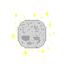

Parte de la historia va a parar a las palmas de las manos. Las mías, flacas e indeseables,
cuentan una necesidad; casi siempre moviéndose, creando más arrugas de las habituales,
se desfiguran como olas del mar. Como un ser independiente, siempre buscan a su gemela idéntica,
una réplica suave e inquieta: tu mano.
El primer contacto, una inmensidad insondable, crea una patulea de colores,
un tamborileo eterno que representan mis latidos.
Tú, que eres luz, que eres esperanza e idilio, luchas por ver la belleza en las cosas.
Eres ese sentimiento de entero deseo por sentirse bien, eres mi raison d’être.
Brisia, lo mejor que te puedo dar en la vida no es algo material (aunque también trataré de dártelo),
sino una certeza; esa certeza es tranquilidad, poder decir que nada temes, que vivas la vida enseñando,
como me enseñas a mí, a no tener miedo. Esa certeza es la paz, que llegues a grande y lo único que
desees es revivir lo que experimentaste.

Por último, quisiera poderte hacer saber lo que haces en la gente, porque, personalmente, en mí sucede.
Que a pesar de ya haber compartido contigo incontables eventos, aún sigo con esa actitud enervante cuando vamos a
crear uno nuevo. Que sepas, Brisia, que cuando estoy solo, cuando nadie parece estar al tanto de mí,
sé que no estoy solo, pues tu simple recuerdo me acompaña, y eso sucederá toda la vida.
Mi felicidad está completa desde que te conozco.